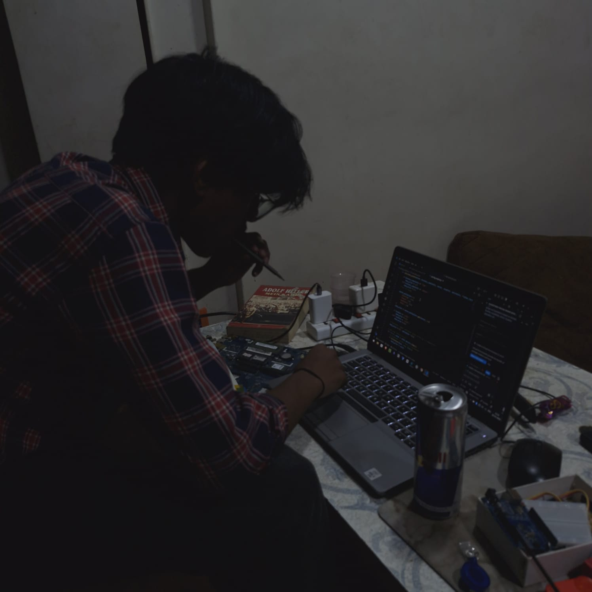

Your Dream Life Might Just Be Being a Cuck.
Independent philosophical and social commentary exploring individual agency, social conformity, manufactured aspirations, human behaviour, society, morality and personal worldview.
So. You're probably wondering why someone thought building software, writing physics research nobody asked for, drafting solar-settlement frameworks, studying business, and lifting weights simultaneously was a reasonable life decision.
Good question. I don't fully know either. What I do know is that I got bored of picking a lane, so I built a highway system instead.
I'm Agnel. I founded and independently operate Machfold Ventures. My work has moved from retail and early marketing into business operations, digital infrastructure, automation and AI systems; alongside it, I pursue independent research and writing. I treat most of life like a debugging problem: find the assumption that's wrong, isolate it, fix the system, ship it, repeat.
This page is not a resume. Resumes are for people with one job title. Scroll on -- this is closer to a tour of the operating system running in my head.

Not a resume. This is a crime scene. Reconstruct the timeline and you'll see exactly where things went sideways, and why that was, in retrospect, the correct call.
Polymathy gets mistaken for trivia. It isn't. It's a transferable skill: the ability to rip the abstraction off any field fast enough to find its load-bearing ideas.
Physics teaches you that systems tend toward disorder. Psychology teaches you humans are systems too. Economics is incentive design. Software is just economics with a compiler. Governance is software with worse error handling.
Click a node. Watch what lights up. That's the actual point -- nothing here exists in isolation.
Not cards. A filesystem. Click things. That's how computers work, and apparently how I work too.
A record of contributions across employment and my independent venture. Expand a file for the role, organization, work and public references; organization-level work is kept distinct from my individual contribution.
My responsibilities developed from an internship into a manager role. The progression reflects increased responsibility, not two unrelated engagements.
Project-specific technology stack and measured outcomes are not documented in the supplied materials.
Through Social Khaos: social media management and marketing, including content and creative work.
Through Machfold Ventures: designed and developed the website from the ground up, and developed an internal retrieval-augmented generation (RAG) tool.
The RAG tool was an internal business application, not a public product. Its purpose, architecture and implementation details are not described here because the supplied public project materials do not substantiate them and internal information should remain confidential. The project-specific web stack is likewise not recorded in the supplied files.
Website designed and developed through Machfold Ventures. The supplied project files do not identify the implementation stack or document further technical details; none are inferred here.
Short research-paper summaries: enough math to show the spine, enough prose to get the idea without making you read a small thesis in a popup.
Mnemonic State Graph (MSG): A Cue-Gated Human-in-the-Loop Memory Architecture for Conversational AI Systems. Independent work on conversational AI memory, context management, cue-gated retrieval and human-in-the-loop systems. This is a preprint; peer-reviewed validation is not claimed.
A project-linked map of what I have used, built and explored—not a claim that every item represents the same depth of professional experience.
Capabilities describe the work itself. Each is grounded in the experience and projects recorded here, not a software-logo checklist.
Not every line of technical exploration became a finished project. These notes keep unfinished work in its honest place.
An independent Hobbyist project exploring homemade drone development, spanning:
Status: unfinished. It did not become a functioning drone. This is not a completed drone, autonomous flight system or production-ready implementation.
Machfold Ventures is my independent, currently solo venture, founded in January 2025. Early entrepreneurship and marketing experience led me toward business operations and customer acquisition; that understanding now informs a focus on digital infrastructure, websites, automation, workflows, business systems, algorithmic pricing, AI-assisted processes, consulting and business strategy. This section documents my individual work through the venture; Machfold's business site is a separate identity.
Selected client work delivered through Machfold Ventures: Hiring Ninja and Ridha Associates. ValuScale is an exploratory pricing framework, not a claim of commercial deployment.
Independent philosophical and social commentary exploring individual agency, social conformity, manufactured aspirations, human behaviour, society, morality and personal worldview.
You found the part of my life plan that also doesn't exist.